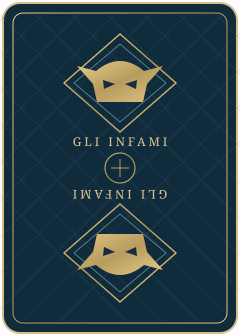

<!doctype html><html lang="it"><meta charset="utf-8"><title>31 — il mazzo 2.0</title><link rel="icon" href="data:,"><style>body{margin:0;background:radial-gradient(ellipse at top,#284b4d,#0b252d);color:#e6c78b;font-family:Georgia}main{max-width:1100px;margin:32px auto;padding:0 28px}small{font:11px system-ui;letter-spacing:3px;color:#b0c4c4}h1{font-size:36px;font-weight:400;margin:10px 0}p{color:#a9bebe;font:14px system-ui;margin-bottom:30px}section{display:grid;grid-template-columns:repeat(7,1fr);gap:15px;align-items:center}img{width:100%;filter:drop-shadow(0 12px 8px #0005)}footer{font:12px system-ui;color:#a9bebe;margin-top:24px;letter-spacing:1px}</style><main><small>PARTY GAME · MAZZO ITALIANO</small><h1>31 degli Infami</h1><p>Mazzo italiano. Quaranta carte. Tutto il tempo che vuoi.</p><section></section><footer>COPPE &nbsp; · &nbsp; DENARI &nbsp; · &nbsp; SPADE &nbsp; · &nbsp; BASTONI</footer></main></html>